|
|
| hard corals text index | photo index |
| Phylum Cnidaria > Class Anthozoa > Subclass Zoantharia/Hexacorallia > Order Scleractinia > Family Faviidae |
| Other
maze corals awaiting identification * Family Merulinidae updated Nov 2019 Where seen? Other kinds of corals with maze-like corallites are sometimes seen on many of our Southern shores. Features: Colonies seen 15-30cm. Colonies may be encrusting orboulder-shaped. The corallites have shared meandering walls sometimes with long valleys, in others, short irregular polygons. The overall pattern is coarse and not as fine as in some other maze favid corals. The walls are tall and rather thick. Colours seen include brown, green and blue. Some species of corals recorded for Singapore that have these patterns include: Platygyra, Goniastrea and Oulophyllia species. It's hard to distinguish them without close examination of small features and they are grouped by large external features for convenience of display. Sometimes mistaken for Brain corals (Family Lobophylliidae) which tend to have much thicker corallite walls which can have large 'teeth'. |
 Kusu Island, Jun 05 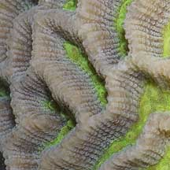 |
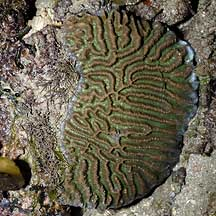 Sentosa, Apr 07 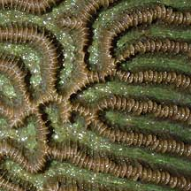 |
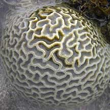 Terumbu Semakau, May 10 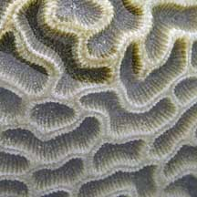 Bleaching. |
*Species are difficult to positively identify without close examination.
On this website, they are grouped by external features for convenience of display.
| Other maze corals on Singapore shores |
On wildsingapore
flickr
|
| Other sightings on Singapore shores |
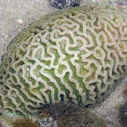 Terumbu Berkas, Jan 10 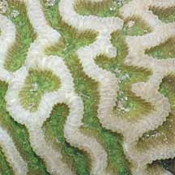 |
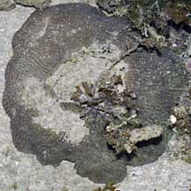 Pulau Pawai, Dec 09 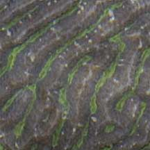 |
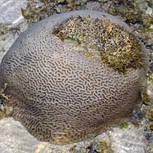 Pulau Berkas, May 10 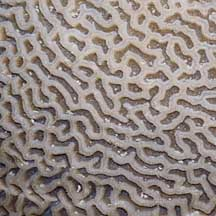 |
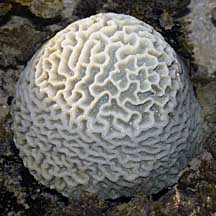 Bleaching. Pulau Berkas, May 10 |
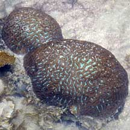 Pulau Pawai, Dec 09 |
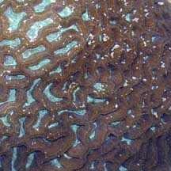 |